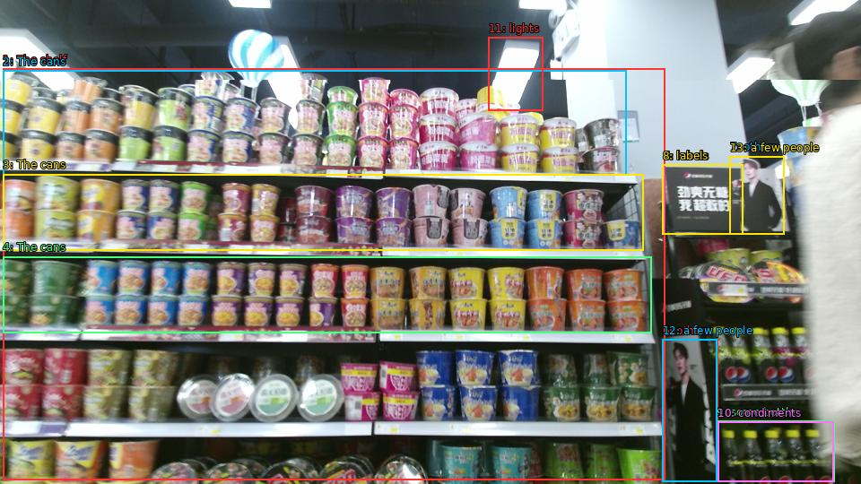

The image shows a shelf in a store filled with various types of canned goods. The shelf is arranged in a grid-like pattern and is filled with different sizes and colors of cans. The cans are of different shapes, sizes, and colors, including red, blue, green, yellow, and pink. Some of the cans have labels on them, while others have labels that read "Canned Goods". There are also some bottles of condiments on the right side of the shelf. The store appears to be well-lit with bright lights and there are a few people visible in the background.

Original · Caption raw · Grounding raw · Koordinate
Številke so lokalni ID regije. Dolge slikovne oznake so skrajšane; spodaj so celotne fraze. Napovedane regije se lahko prekrivajo ali opisujejo skupine.
| ID | Celotna fraza | bbox xyxy |
|---|---|---|
| 1 | The shelf | [3.359999895095825, 76.95000457763672, 741.5999755859375, 535.9500122070312] |
| 2 | The cans | [3.359999895095825, 78.56999969482422, 698.3999633789062, 195.2100067138672] |
| 3 | The cans | [3.359999895095825, 194.1300048828125, 717.5999755859375, 279.9900207519531] |
| 4 | The cans | [3.359999895095825, 286.4700012207031, 726.239990234375, 371.7900085449219] |
| 5 | labels | [739.6799926757812, 183.87001037597656, 828.9599609375, 261.0899963378906] |
| 6 | others | [738.719970703125, 378.8100280761719, 800.1599731445312, 537.5700073242188] |
| 7 | others | [813.5999755859375, 174.15000915527344, 874.0799560546875, 261.0899963378906] |
| 8 | labels | [738.719970703125, 183.87001037597656, 828.9599609375, 261.6300048828125] |
| 9 | some bottles | [799.2000122070312, 469.530029296875, 930.719970703125, 537.5700073242188] |
| 10 | condiments | [800.1599731445312, 470.6100158691406, 929.7599487304688, 537.5700073242188] |
| 11 | lights | [544.7999877929688, 41.85000228881836, 605.2799682617188, 123.93000793457031] |
| 12 | a few people | [738.719970703125, 378.8100280761719, 799.2000122070312, 537.5700073242188] |
| 13 | a few people | [813.5999755859375, 174.69000244140625, 874.0799560546875, 261.0899963378906] |